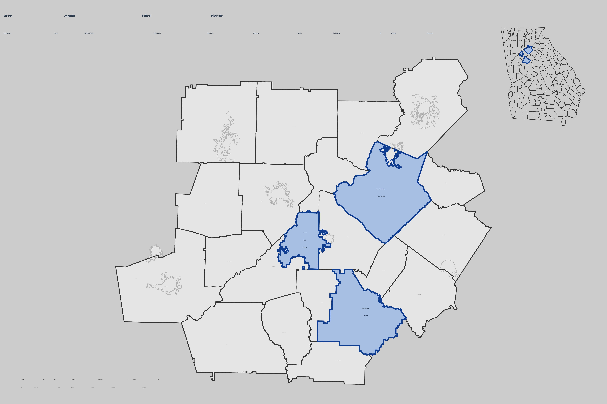

Choose a dataset, pick a field, and let quantile, equal-width, or natural breaks find the classification. Every map is styled through the RCDS system and checked before you export it — not just styled, scored.

Map Builder takes the fields you already have — attendance zones, tracts, districts — and carries them through classification, styling, and a quality check in one pass.
Load attendance zones, census tracts, or your own shapefile, then choropleth any of the 40+ demographic and outcome fields — labeled in plain language, not column codes.
Quantile, equal-width, or natural breaks, from three to seven classes, sequential or diverging — recalculated live as you adjust.
Every map is checked, not just styled: palette contrast, class separation, label legibility, and source citation, scored out of 100.
One theme, five destinations: Power BI, R/ggplot2, Quarto Dashboard, raw CSS tokens, or a print-ready static figure.
A sample of the maps researchers, analysts, and journalists have built. Screenshots stand in below until you upload your own.
Every map gets a Map Quality Score before you export it. It reads live off the demo below — change the classification or palette and watch it move.
Map Builder is a UI over the same rcds R package that already powers GCPS's dashboards — the browser tool and the package produce the same figure.
Pick a geometry level — attendance zones, metro tracts, district outlines — and Map Builder reprojects it for you.
Choose a field, a classification method, and a palette. Breaks recompute from the live data, not a fixed scale.
Review the Map Quality Score, then export to R, Power BI, Quarto, or a static figure — same theme, five destinations.
library(rcds) zones <- load_zone_data("gcps_es_absms") |> sf::st_transform(4326) breaks <- classInt::classIntervals( zones$frpl, n = 5, style = "quantile" ) ggplot(zones) + geom_sf(aes(fill = frpl)) + scale_fill_rcds_c("gcps_teal", breaks = breaks) + theme_gcps_map("civic") + rcds_signature( "GCPS Map Builder", tool = "rcds + ggplot2", sources = "GCPS attendance zones, 2025–26" )
Product chrome stays quiet — steel blue, cool neutrals, an amber accent kept to ≤10% of any screen — so the map itself carries the color.
One variable, low → high
A meaningful midpoint — change, z-scores
Primary, data, and insight — 70 / 20 / 10
The app's default canvas. Cool neutral, high contrast, built for dashboards and the web.
A dramatic dark canvas for posters and social. Available as an export theme.
The warm, vintage "financial-times" canvas. An export option for print and report figures — not the app's base design.
The paper canvas is intentionally not the default here: it's one of five export destinations, chosen per figure — not the basis for the product itself.
This is sample data standing in for your own upload, generated to show a plausible spatial pattern — but every control below is real and recomputes live.
Reference material for the field dictionary, the theme system, and the underlying R package.
Connect a dataset, pick a first field, and export your first figure in under five minutes.
Every demographic and outcome field, its human-readable label, and the palettes and canvases available for export.
Map Builder is a browser UI over rcds — use the package directly for scripted, reproducible pipelines.